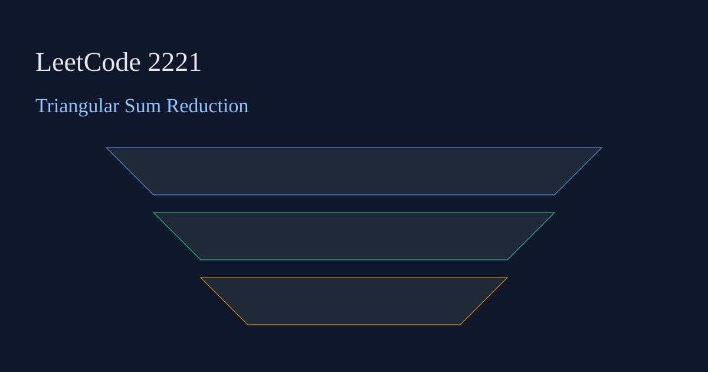

LeetCode 2221: Find Triangular Sum of an Array (In-Place Simulation)
LeetCode 2221ArraySimulationToday we solve LeetCode 2221 - Find Triangular Sum of an Array.
Source: https://leetcode.com/problems/find-triangular-sum-of-an-array/

English
Problem Summary
Given digits array nums, repeatedly replace each adjacent pair by (a+b)%10 until one value remains.
Key Insight
Each round only depends on current prefix, so we can update the same array in-place and shrink effective length by one.
Complexity
Time: O(n^2), Space: O(1).
Reference Implementations (Java / Go / C++ / Python / JavaScript)
class Solution { public int triangularSum(int[] nums) { for (int len = nums.length; len > 1; len--) { for (int i = 0; i < len - 1; i++) nums[i] = (nums[i] + nums[i + 1]) % 10; } return nums[0]; } }func triangularSum(nums []int) int { for l := len(nums); l > 1; l-- { for i := 0; i < l-1; i++ { nums[i] = (nums[i] + nums[i+1]) % 10 } } return nums[0] }class Solution { public: int triangularSum(vector& nums) { for (int len = nums.size(); len > 1; --len) for (int i = 0; i < len - 1; ++i) nums[i] = (nums[i] + nums[i+1]) % 10; return nums[0]; } }; class Solution:
def triangularSum(self, nums: list[int]) -> int:
for l in range(len(nums), 1, -1):
for i in range(l - 1):
nums[i] = (nums[i] + nums[i + 1]) % 10
return nums[0]var triangularSum = function(nums) { for (let len = nums.length; len > 1; len--) { for (let i = 0; i < len - 1; i++) nums[i] = (nums[i] + nums[i + 1]) % 10; } return nums[0]; };中文
题目概述
给定数字数组 nums，每轮把相邻两数替换为 (a+b)%10，直到只剩一个数，返回它。
核心思路
每一轮只依赖当前数组前缀，因此可在原数组上原地更新，并把有效长度逐轮减一。
复杂度
时间复杂度 O(n^2)，空间复杂度 O(1)。
多语言参考实现（Java / Go / C++ / Python / JavaScript）
class Solution { public int triangularSum(int[] nums) { for (int len = nums.length; len > 1; len--) { for (int i = 0; i < len - 1; i++) nums[i] = (nums[i] + nums[i + 1]) % 10; } return nums[0]; } }func triangularSum(nums []int) int { for l := len(nums); l > 1; l-- { for i := 0; i < l-1; i++ { nums[i] = (nums[i] + nums[i+1]) % 10 } } return nums[0] }class Solution { public: int triangularSum(vector& nums) { for (int len = nums.size(); len > 1; --len) for (int i = 0; i < len - 1; ++i) nums[i] = (nums[i] + nums[i+1]) % 10; return nums[0]; } }; class Solution:
def triangularSum(self, nums: list[int]) -> int:
for l in range(len(nums), 1, -1):
for i in range(l - 1):
nums[i] = (nums[i] + nums[i + 1]) % 10
return nums[0]var triangularSum = function(nums) { for (let len = nums.length; len > 1; len--) { for (let i = 0; i < len - 1; i++) nums[i] = (nums[i] + nums[i + 1]) % 10; } return nums[0]; };
Comments